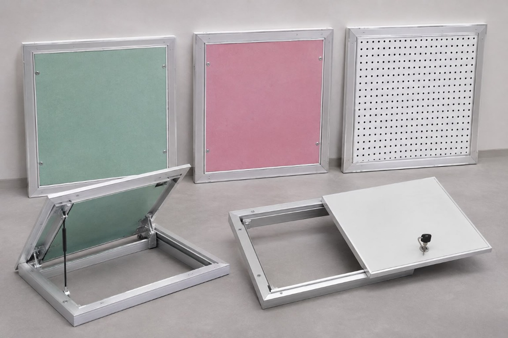

Accès facilité
Intervention rapide sur les installations techniques dissimulées.


Nos solutions
Un accès pratique aux installations techniques, avec une intégration discrète dans vos espaces.
Accès technique & finition
LVC DISTRIBUTION propose une gamme de trappes de visite conçues pour faciliter l’accès aux installations techniques intégrées dans les cloisons et les faux plafonds, tout en préservant l’esthétique et la fonctionnalité des espaces.
Adaptées aux projets résidentiels, tertiaires et industriels, elles permettent d’accéder aux réseaux et équipements nécessitant des opérations de contrôle, d’entretien ou de maintenance.
Les avantages
Des détails pratiques pour accéder aux équipements tout en gardant des surfaces propres et fonctionnelles.
Intervention rapide sur les installations techniques dissimulées.
Une finition harmonieuse avec les plafonds et les cloisons.
Des ouvertures et fermetures adaptées aux besoins de maintenance.
Différentes dimensions et configurations selon les applications.
Certains modèles certifiés peuvent proposer des performances coupe-feu.
Applications
Pour les accès aux réseaux et équipements intégrés dans vos aménagements.
Ressources techniques
Consultez les caractéristiques de la trappe de visite Alumatic.
Un projet spécifique ?
Notre équipe vous accompagne dans le choix des solutions adaptées à votre projet.
Nous contacterVotre partenaire
de confiance